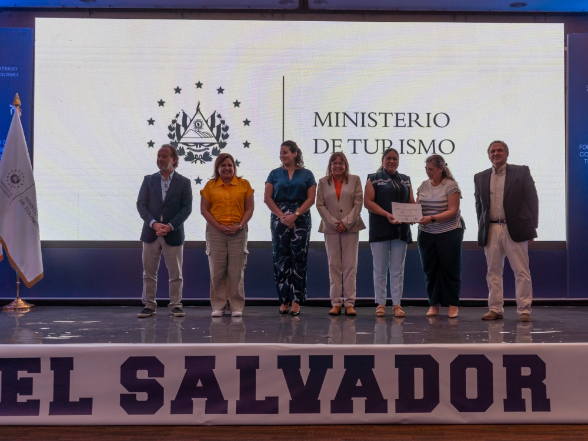

Descrição do projeto
Foram fortalecidas as capacidades de gestão de 160 integrantes de 13 Comitês de Desenvolvimento Turístico em quatro Destinos Turísticos Especializados do oriente do país. O trabalho incluiu o desenho e a implementação de um programa de capacitação baseado na abordagem “aprender fazendo”, a formulação participativa de planos de trabalho e o levantamento de inventários da oferta turística. Esses insumos foram posteriormente integrados a uma WebApp de Mapa Interativo desenvolvida no âmbito da consultoria, como ferramenta de gestão e promoção dos destinos.
← Voltar ao portfólio